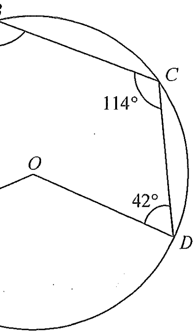

In the figure, $O$ is the centre of the circle $ABCD$. If $\angle BAO = 28^\circ$, $\angle BCD = 114^\circ$ and $\angle CDO = 42^\circ$, then $\angle ABC =$

Join $OB$. In $\triangle OAB$,
$OA = OB$ (radii)
$\therefore \angle OAB = \angle OBA = 28^\circ$ (base $\angle$s, isos. $\triangle$)
Join $OC$. In $\triangle OCD$,
$OC = OD$ (radii)
$\therefore \angle OCD = \angle ODC = 42^\circ$ (base $\angle$s, isos. $\triangle$)
$\angle BCD$ is split by the chord $OC$:
$\angle BCO = \angle BCD - \angle OCD = 114^\circ - 42^\circ = 72^\circ$
In $\triangle OBC$,
$OB = OC$ (radii)
$\therefore \angle OBC = \angle BCO = 72^\circ$ (base $\angle$s, isos. $\triangle$)
$\angle ABC = \angle OBA + \angle OBC = 28^\circ + 72^\circ$
Question. In the figure, \(O\) is the centre of the circle and \(A\), \(B\), \(C\) lie on it. \(OA=OB=OC\). If \(\angle AOB=40^{\circ}\) and \(\angle BOC=100^{\circ}\), find \(\angle ABC\).